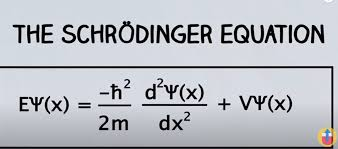

| Back to Index | About Me | Concepts | History | Innovations & News | Gallery | |
Basic concepts and methods | ||||||
Bohr's theory of electron movement was expanded by German physicist Arnold Sommerfeld, incorporating elliptic orbits and other refinements. However, the ad hoc mixture of classical and quantum ideas made the theory unsatisfactory. In 1925, German scientists published papers that established a firm conceptual foundation for physics. These papers took two approaches: matrix mechanics proposed by Werner Heisenberg, Max Born, and Pascual Jordan, and wave mechanics proposed by Erwin Schrödinger. Despite their differences, the two theories were mathematically equivalent. Schrödinger's wave mechanics is discussed because it is less abstract and easier to understand than Heisenberg's matrix mechanics. This period of creativity in physics has had a lasting impact on the field of physics. | ||||||
Schrödinger’s wave mechanicsSchrödinger's wave equation, which established quantum mechanics in a widely applicable form, was based on de Broglie's hypothesis concerning the wave behaviour of matter. Schrödinger was guided by a mathematical formulation of optics, which allowed for the straight-line propagation of light rays when the wavelength was small compared to the dimensions of the apparatus employed. He set out to find a wave equation for matter that would give particle-like propagation when the wavelength became comparatively small. Schrödinger applied his equation to the hydrogen atom, where the potential function, given by classical electrostatics, is proportional to −e2/r, where −e is the charge on the electron. The nucleus (a proton of charge e) is situated at the origin, and r is the distance from the origin to the position of the electron. Schrödinger solved the equation for this particular potential with straightforward, though not elementary, mathematics. Only certain discrete values of E lead to acceptable functions Ψ, which are characterized by a trio of integers n, l, m, termed quantum numbers. The values of E depend only on the integers n (1, 2, 3, etc.) and are identical with those given by the Bohr theory. The square of the wave function, Ψ2, has a physical interpretation. Schrödinger originally supposed that the electron was spread out in space and that its density at point x, y, z was given by the value of Ψ2 at that point. Almost immediately Born proposed what is now the accepted interpretation—namely, that Ψ2 gives the probability of finding the electron at x, y, z. The distinction between the two interpretations is important. If Ψ2 is small at a particular position, the original interpretation implies that a small fraction of an electron will always be detected there. In Born's interpretation, nothing will be detected there most of the time, but when something is observed, it will be a whole electron. Thus, the concept of the electron as a point particle moving in a well-defined path around the nucleus is replaced in wave mechanics by clouds that describe the probable locations of electrons in different states. In 1928, English physicist Paul A.M. Dirac produced a wave equation for the electron that combined relativity with quantum mechanics. Dirac showed that an electron has an additional quantum number ms, which corresponds to an additional form of angular momentum ascribed to a spinning motion. The electron-spin hypothesis not only provided an explanation for the observed magnetic moment but also accounted for many other effects in atomic spectroscopy, including changes in spectral lines in the presence of a magnetic field (Zeeman effect), doublet lines in alkali spectra, and fine structure (close doublets and triplets) in the hydrogen spectrum. The Dirac equation also predicted additional states of the electron that had not yet been observed. Experimental confirmation was provided in 1932 by the discovery of the positron by Carl David Anderson. Every particle described by the Dirac equation has to have a corresponding antiparticle, which differs only in charge. The positron is just such an antiparticle of the negatively charged electron, having the same mass as the latter but a positive charge. |
||||||
|  | ||||||
Time-dependent Schrödinger equationSchrödinger proposed both a time-independent equation and a time-dependent equation to describe the changes in a system from one state to another. By replacing energy E in Schrödinger's equation with a time-derivative operator, he generalized his wave equation to determine the time variation of the wave function and its spatial variation. The time-dependent Schrödinger equation can be calculated using the Bohr relation, which states that an atom can change spontaneously from one state to another with less energy, emitting the difference in energy as a photon. If electromagnetic radiation is applied to atoms, transitions can be stimulated, causing the atom's energy to increase or decrease. This process forms the basic mechanism for the operation of lasers. The probability of a transition from one state to another depends on the values of the l, m, and ms quantum numbers of the initial and final states. For most values, the transition probability is zero, but for certain changes in the quantum numbers, summarized as selection rules, there is a finite probability. For example, the l value changes by unity because photons have a spin of 1. The selection rules for radiation relate to the angular momentum properties of the stationary states, reflecting the conservation of angular momentum between atoms and radiation. | ||||||